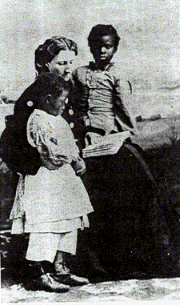

|
Education is a process of cultural transmission and transformation. The two
basic cultures taught or transmitted to first-generation African slaves in the
British North American colonies were African culture, which they learned from
their relatives and friends, and European culture, which their captors forced
upon them. The American environment (social, political, economic, and physical);
the rise of staple-crop, plantation agriculture; the passage of time; succeeding
generations of masters and slaves; and the interaction of African and European
cultures slowly transformed them into Euro-American and Afro-American cultures.
These two cultures were the content of slave education, their interaction,
transformation, and transmission its method.
African and Afro-American slaves learned the English language, Christian
religion, and many values and practices from whites. Early twentieth-century
racist scholars (e.g., Ulrich B. Phillips) viewed slavery as moral, a school for
civilization and Christianity for African savages. A later generation of
scholars, most notably Stanley Elkins, described slavery as an immoral process
that taught Africans to become infantilized, obsequious Sambos who internalized
their masters' dehumanizing views of slaves. Both schools of thought, however,
basically agreed that slave education was primarily the imposition of white
culture upon Afro-Americans.
In the 1960s a new generation of scholars began to counterbalance the white
masters' writings and records with black primary sources (e.g., Afro-American
history and folklore, autobiographies of escaped slaves, and interviews with
former slaves), and discovered that white-training was neither totally effective
nor one-sided. Rejecting the view that Africans brought no culture to or lost
their culture in slavery, John W. Blassingame and others described the elements
of African culture that slaves retained and the viable institutions (family and
underground church) and folklore that Afro-American slaves developed, and also
shared with and taught to their children. Learning and teaching this
Afro-American culture allowed slaves partially to resist the dominance of white
culture, and permitted them to transmit elements of their culture to whites.
Scholars such as Blassingame and Eugene D. Genovese have described how the
interaction of slaves and masters produced plantation society in the South.
Ironically, even racist historians such as Phillips, who so long found "The
Central Theme of Southern History" in white Southerners' determination to
maintain white supremacy, recognized that the very existence of blacks in the
South shaped the essence of Southerners, or, in educational terms, blacks taught
whites to be Southerners.
Most studies of North American slavery discuss education only in terms of formal
(schools) or informal (tutoring or self-instruction) teaching of
reading-writing-arithmetic. A few slaves did, in fact, learn to read, write, and
compute. During the colonial period there were few restrictions on slave
education. Especially in the Middle and New England colonies, some masters and
religious groups provided literacy training for slaves. Phillis Wheatley, the
noted poet, was the best example of a slave tutored by her master's family. Such
organizations as the Anglican Society for the Propagation of the Gospel in
Foreign Parts and the Society of Friends (Quakers) founded a few schools
(usually in cities) for free and slave Afro-Americans. Later, even after most
Southern states had passed laws in the 1830s forbidding slave education,
Presbyterians and Southern Methodists established carefully supervised
plantation missions and schools which taught religion and, sometimes, enough
literacy to permit slaves to read the Bible. From the late 1700s on, free urban
blacks began schools for their children. Some urban slaves attended these
schools; others received secret instruction from the black teachers.
|

Teaching slaves to read was illegal in most
states. When it did happen, it typically was done informally, by
their mistress.
|
Formal (school) literacy training for slaves, even when it was available,
remained limited, as it also was for most middle- and lower-income Americans,
black and white, before the Civil War. Most slaves who could read and write
learned from their masters (as they taught the slaves to do jobs which required
some literacy) or, more often, from the masters' wives or children. Even after
teaching slaves to read and write became illegal in the South (except in
Maryland, Kentucky, and Tennessee) in the 1830s, many planters' wives still
taught favored slaves the rudiments. Slave children who carried the master's
children's books to and from school learned by listening outside the school.
When planters' children wished to "play school," they literally had a captive
class in the plantation's slave children. Slaves sometimes traded their skills
or possessions to whites for education or books, a practice especially common in
cities. While it is impossible to document precisely how much of this literacy
training occurred, laws against teaching slaves to read and write, laws
punishing slaves who wrote passes, and the testimony of ex-slave interviews and
fugitive slave narratives all suggest that some slave literacy training
continued until the arrival of Union troops and Northern, black and white,
missionary-teachers during and after the Civil War allowed these underground
streams to bubble up and flow freely.
By focusing on literacy training, scholars have tended to overlook or slight
another type of education which was even more important in most slaves' daily
lives, namely, vocational training. The primary education most Americans
received before the Civil War (as children, apprentices, or slaves) was job
training. In this area, as Booker T. Washington and others have noted, the
plantation was a school for slaves. Slaves, who did most of the work on the
antebellum Southern plantations (and much of the work in towns), received
careful training in all aspects of domestic service, farming, dairying, care of
livestock, construction and repair of fences and buildings, and all the other
jobs on plantations (even, in some cases, overseeing the operation of the entire
plantation), as well as most jobs in the South's few mines, factories, and
towns. Indeed, Washington frequently stated that his emphasis on vocational
training at Tuskegee Institute was, in part, an attempt to regain for
Afro-Americans the level of vocational education many had acquired under
slavery.
While forced contact with white culture from the 1660s through the 1860s was
teaching Africans to be Afro-Americans (as, simultaneously, these Africans and
Afro-Americans were teaching Europeans, then white Americans, in the South to be
Southerners), a distinctive Afro-American culture remained the essence of the
slave education that succeeding generations of slaves received, reworked, and
remitted to their descendants. Although this Afro-American slave culture
differed discernibly from Euro-American Southern culture, slave education varied
by time and location. Purely African education virtually stopped when the
external slave trade became illegal in 1808, but elements of African culture
continued to be taught for decades (even into the twentieth century) on isolated
Georgia and South Carolina Sea Islands after slavery ended in 1865. Where as
well as when slaves lived influenced their education. Because of their
continuous contact with whites and relative isolation from slave quarters,
slaves on farms and small plantations, and yard slaves (artisans) and house
servants on large plantations had the least distinctively Afro-American
education. Urban and industrial slaves' education included both white and free
black influences. Afro-American education developed most fully among field
slaves in the slave quarters of large plantations.
Education in plantation slave quarters was distinctive in content and method,
although the overlap of the two frequently made the medium the message. Older
slaves, for example, taught youngsters to resist white values and to trick
whites both by doing so and by rewarding such behavior, just as life in the
community taught the value of community. Young slaves learned how their elders
perceived black superiority to whites, the unity of the quarter community, the
importance of the family and freedom, the reality and significance of the spirit
world, the difference between true, black Christianity and the false religion
(subservience and obedience) their masters sought to teach, and both
antipathy--distrust of whites and the necessity for constant vigilance and care
in dealing with such powerful adversaries. By example, precept, and
participation the slave quarter taught these lessons through the community,
extended family, peer group, and secret slave congregation, and through songs
(secular and spirituals) and religious, heroic, historic, and trickster myths,
folktales, and stories.
Emancipation and the dispersion of the slave quarters after the Civil War ended
slave education in its unique form. Continued segregation and discrimination,
however, insured the continuous teaching--transmission of Afro-American culture
through Afro-American education to the present, even as the "great migration" to
cities and the North, the modern civil rights movement, and other economic,
political, and social forces have shaped and continue to transform Afro-American
education and culture.
Source: Randall M. Miller and John David Smith, eds. Dictionary of
Afro-American Slavery (Westport, CT: Praeger, 1997), 209-13.
|